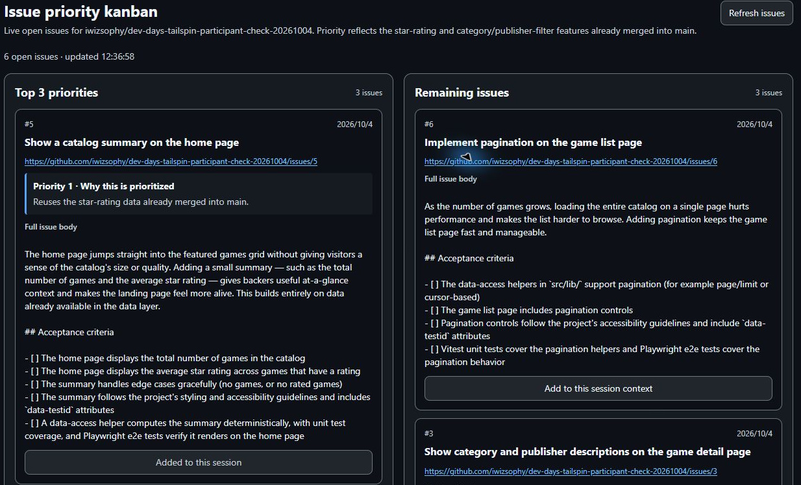
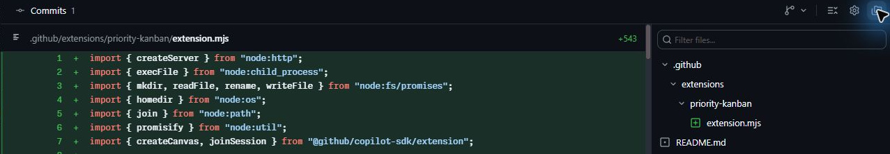
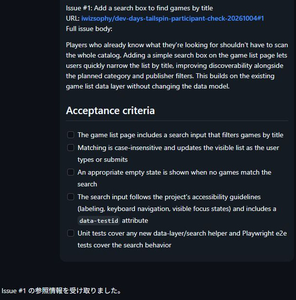
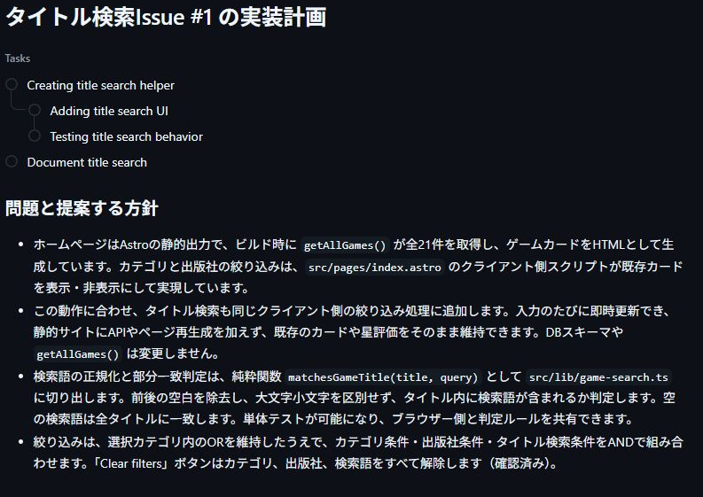
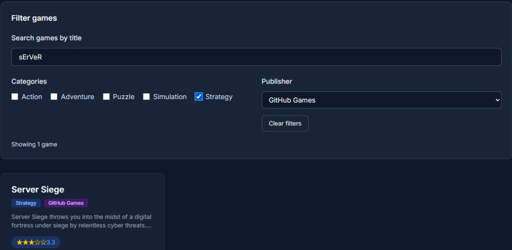
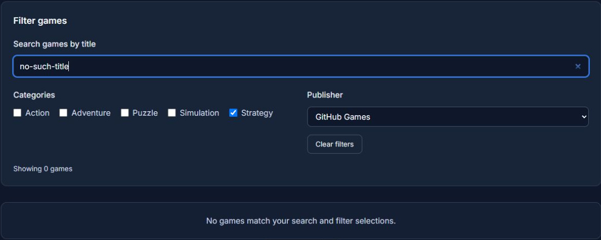
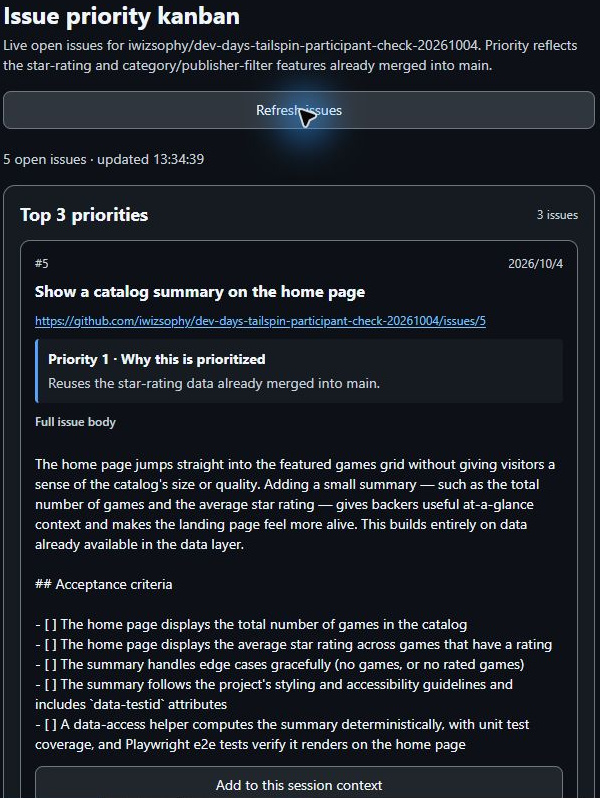

8.1 章の概要
自分の演習用Tailspin Toysリポジトリでは、星評価、コーディング標準、フィルター機能をmainへ統合しましたが、まだ対応すべきIssueが残っています。チャットだけでIssueを比べると、一覧や優先理由が会話の中へ埋もれがちです。そこで、演習用リポジトリのIssueを並べて比較し、次の実装セッションへ要件を渡せるキャンバスを作成します。
キャンバスは、人とエージェントが同じ成果物を見て操作する領域です。本章ではエージェントへ指示し、自分の演習用リポジトリのOpen IssueをGitHubから取得するカンバンボードを作ります。チームで再利用できる形で演習用リポジトリへ保存したら、別の実装セッションでボードを開き直してください。ゲームのタイトル検索Issueを選び、タイトル検索機能の計画・実装・検証・マージまで進めましょう。
CanvasのボタンでIssue本文を現在のセッションへ渡す操作と、エージェントにIssueの実装を依頼する操作は分けて扱います。本文追加ボタンを押した後の会話とエージェントの動作を観察し、本文の受領だけで止まるかに注目してください。
8.2 この章で学ぶこと
| 学ぶこと | できるようになること |
|---|---|
| キャンバスとチャットの使い分け | 要件の相談と、課題の一覧・比較・操作を組み合わせられる |
| 共有する成果物の管理 | Canvasをリポジトリへ保存し、別のセッションで再利用できる |
| 作業開始の区切り | Issue本文の受領を確認してから計画を依頼し、承認後に実装へ進める |
| 結果の更新と照合 | 検索の動作を検証し、マージ後のOpen一覧をGitHubと照合できる |
8.3 取り組む前に
自分の演習用リポジトリのmainに、前章のフィルター機能がマージされていることを確認します。本章ではAppでCanvasを共有するセッションと、検索を実装するセッションを分けます。どちらもNew worktreeと演習用リポジトリのmainを選び、それぞれの開始時点のmainを引き継いでください。
演習用リポジトリのゲームのタイトル検索Issueの本文と、Tailspin Toysのゲームデータにあるタイトル・カテゴリ・出版社を参照できる状態で取り組みます。検索を追加しても星評価と既存のカテゴリ・出版社フィルターを維持することが、今回の要件です。画像の操作例にあるIssue番号や件数は、自分の演習用リポジトリの最新情報と照合しましょう。
エージェントは、入力した指示に応じてCanvasの表示やボタンを生成します。ボタンの表示名が操作例と違っていても、Open Issue一覧を取得する操作、Issue本文をセッションへ追加する操作、Issueの実装を始める操作を区別できるかで確認します。
8.4 体験すること
8.4.1 作業を追跡するキャンバスを作成する
最初に、GitHubで自分の演習用リポジトリのOpen Issueを読み、自分ならどの3件を優先するか考えてみましょう。Canvasに表示される優先理由と比較するための予想になります。ここで作るセッションではCanvasを完成させ、検索機能の実装は別のセッションで始めます。
- AppのサイドバーにあるProjectsで演習用プロジェクトを右クリックし、New sessionを選択します。
- 入力欄下部で演習用リポジトリ、New worktree、mainが選ばれていることを確認します。作成されたworktreeに、前章のマージ結果が反映されていることも確認してください。
- 次のプロンプトを入力し、カンバンボードの作成を指示します。
作業の優先順位を整理するカンバンボードのcanvasを作ってください。
この演習リポジトリのGitHubから最新のOpen Issue一覧を取得し、上位3件と残りを分けて表示してください。Issueを固定配列に埋め込まず、再取得できるRefreshボタンを付けてください。
上位3件には内容と優先理由を記載し、mainへマージ済みの星評価とフィルター機能を理由に反映してください。文字と背景を読み分けやすくし、キーボードで操作するときのフォーカスも見えるようにしてください。
すべてのIssueカードに、番号・タイトル・URL・本文全体を現在のセッションのコンテキストへ1回だけ追加するボタンを付けてください。送信内容は「Issue本文を追加しました」という事実と、本文の受領だけを1回返す指示にしてください。受け取ったエージェントは実装や新しいセッションの作成を始めない仕様にしてください。
同じセッションへの重複送信を防ぎ、Refreshしても送信済み状態を保ってください。別のセッションでは独立して本文を追加できるようにしてください。
今回はCanvasの作成と確認までです。カードのIssueの実装やPR作成はまだ行わないでください。作成したキャンバスの表示先は、AppのCanvas作成セッションの右パネルです。作成の入口が分からない場合は、そのセッション内で/create-canvasに続けて必要な操作を伝える方法もあります。GitHub公式の作成手順

Canvasに古いIssue一覧を固定表示すると、完了済みの作業をもう一度選ぶおそれがあります。本演習ではCanvasのRefreshボタンで、演習用リポジトリの最新Open Issue一覧を取得します。Canvasの一覧がGitHubと常時自動同期されると考えず、どの操作で最新情報を取得するかを確かめてください。
8.4.2 作成したボードをレビューする
- GitHubで演習用リポジトリのOpen Issueを開き、Canvasの番号・タイトル・本文を照合します。CanvasのRefreshが固定配列を再描画するだけになっていないか、GitHubから一覧を取得する処理も確認してください。
- Canvasの上位3件と優先理由を、自分の予想と比べます。星評価とフィルター機能をこれから作る前提にしている場合は、エージェントに演習用リポジトリのmainを確認させ、Canvasの優先理由を修正するよう依頼します。
- 文字が背景に埋もれず、操作するボタンを見分けられるかを確認します。Tabで移動したときに、どこを選んでいるかも見てください。
- 本文追加ボタンを1回押し、Issue本文全体が会話へ1回追加され、エージェントが受領だけを1回返すことを確認します。同じカードの再クリックやRefreshで、通知が増えないことも確かめます。
Canvasの本文追加ボタンは、Issueの実装計画を立てる前に要件をセッションへ渡すためのものです。ボタンを押してエージェントが実装を始めた場合は、AppのStopでセッションの処理を止めます。途中の変更を保全してから、エージェントへボタンの送信内容の修正を依頼してください。1回目の生成で不足があっても、会話やボタンの動作で観察した問題を具体的に伝え、修正後に同じ条件で確かめます。
8.4.3 キャンバスを共有保存してマージする
共有Canvasの保存とタイトル検索機能の実装を別のPRにすると、ボードの動作を先にレビューできます。共有CanvasのPRを演習用リポジトリのmainへマージし、新しいworktreeで同じボードを開けることを確認してから、カードにある検索Issueの実装へ進みましょう。Canvas作成セッションにしかない一時ファイルへ依存していないかも確かめられます。
- AppのCanvas作成セッションで、次のプロンプトを入力します。
開発チームと共有できるよう、このcanvasをプロジェクト共有スコープの
.github/extensions/priority-kanban/extension.mjsに保存し、READMEへ別セッションで開く手順を追加してください。必要な補助ファイルも保存してください。
最新のOpen Issue取得、Refresh、全カードの本文追加ボタン、1回の本文送信と1回の受領応答、重複送信防止を確認してください。ボタンの確認でIssueの実装を始めないでください。
保存前にこのセッションで追加済みのIssueも、保存後に重複送信しないようにしてください。別のセッションの追加済み状態とは分けて管理してください。
差分はCanvasと再利用手順の範囲にしてください。PRはレビュー後に作成します。- Canvas作成セッションのChangesで、Canvasが
.github/extensions/priority-kanban/extension.mjsへ保存され、演習用リポジトリのREADMEに再利用手順があることを確認します。 - 保存前に本文を追加したカードが送信済みのままであることと、Refresh後も通知が増えないことを確認します。未送信のカードを使う場合も、本文1回・受領1回で止まり、実装を始めないことを確かめてください。
- Canvas作成セッションの差分がCanvasと再利用手順の範囲に収まっていることをレビューします。Canvasの変更に関連する検査もエージェントへ依頼し、その検査結果を確認します。
- Canvas作成セッションで通常のCreate PRから共有CanvasのPRを作成し、最新コミットのCI全ジョブ成功を待ちます。その後、第7章の開始操作と同じくAgent mergeをOnにします。
- AppとGitHubで共有Canvasの同じPRを開き、演習用リポジトリのmainへMergedになったことを確認します。

公式では.github/extensionsをチームで共有するプロジェクトスコープ、~/.copilot/extensionsを個人用スコープとして説明しています。priority-kanbanは本演習の拡張名です。個人用の場所や一時領域にしかない場合は、共有保存を依頼してください。GitHub公式の保存先とファイル構成
8.4.4 別のセッションでキャンバスを開く
- AppのProjectsで演習用プロジェクトからNew sessionを作り、New worktreeと演習用リポジトリのmainを指定します。新しいworktreeが共有Canvasのマージを含むmainを継承していることを確認してください。
- Appで新しい拡張の承認画面が出た場合は、Repository trustのReview repository contentから拡張の内容を確認します。前節でレビューした共有Canvasの保存先とファイルであることを確かめてから、Accept for new sessionsで承認します。
- 次のプロンプトで保存したCanvasを開きます。
リポジトリに保存したIssueの優先順位を整理するcanvasを開いてください。
まだIssueの実装は始めず、最新のOpen Issueを表示してください。- 新しいセッションの右パネルに共有Canvasが表示され、演習用リポジトリの最新Open Issueを取得していることを確認します。Canvas作成セッションで本文を追加したカードでも、新しいセッションには本文を追加できることを確かめます。
- ゲームのタイトル検索Issueのカードで、本文を現在のセッションへ追加するボタンを1回押します。Add to current sessionなど、ボタン名は生成した実装によって異なります。
- タイトル検索Issueの番号・タイトル・URL・本文全体が新しいセッションの会話へ1回送られ、エージェントが受領だけを返すことを確認します。まだ検索の実装は依頼しません。

Canvas作成セッションで作ったボードを新しいセッションで開けただけでは、再利用の確認は完了しません。演習用リポジトリの最新Open Issueの取得と、新しいセッションへのIssue本文追加まで試すことで、ボードの見た目と操作の両方を再利用できるかが分かります。
8.4.5 検索の計画を確認して実装する
- 共有Canvasを開いた新しいセッションで、ゲームのタイトル検索Issueの本文の受領を確認したら、入力欄下部のモードをPlanに切り替え、次のプロンプトを送信します。このセッションで検索機能の計画と実装を進めます。モードの選択と計画承認の操作は、第5章で使ったものと同じです。
Canvasから追加したタイトル検索Issueの実装計画を作成してください。
既存のデータ取得とフィルター処理を確認し、検索をどの層に追加するかとその理由を説明してください。星評価を維持し、検索条件と既存のカテゴリ・出版社フィルターをANDで組み合わせてください。
大文字小文字、前後の空白、部分一致、検索結果0件、キーボードでの入力と解除をどう確認するか、実データから期待するタイトルと件数を示してください。
計画の承認前には実装を始めず、承認後も差分レビューとMCP検証を終えるまではPRを作成・マージしないでください。- 質問が出た場合は、既存フィルターとの関係を考えて回答します。Clear filtersで検索語も解除するかという質問なら、検索・カテゴリ・出版社を一緒に解除する方針を選びます。
- 検索機能の実装セッションでReview planを開き、エージェントの計画を読みます。検索を追加する場所と理由、星評価の維持、AND条件、入力の扱い、テストの期待値を確認し、足りない点は修正を依頼してください。
- 検索機能の計画を確認できたらApprove and implement this planを選択し、エージェントへ承認を送ります。承認後はAutopilotによる検索機能の実装を確認します。

画像はタイトル検索の実装計画を読むための例です。計画を読んだ後に、検索機能の実装セッションのReview planで承認します。承認ボタンを押す前に、検索とフィルターを併用したときにどのゲームのタイトルが残るかを実データから予想しておきましょう。
8.4.6 検索を検証し、ボードの結果を更新する
- Tailspin Toysのゲームのタイトル検索機能の実装完了後、Appの検索機能の実装セッションでChangesを開き、検索の差分をレビューします。エージェントへ単体・E2Eテストなどの検査とPlaywright MCPによるTailspin Toysのブラウザー検証を依頼してください。次の表から期待するゲームのタイトルと件数を決め、実際の表示と比べます。
| 操作・条件 | 期待する結果の決め方 | 確認する理由 |
|---|---|---|
| 条件を指定せず一覧を開く | 検索前のタイトルと総件数を確認する | 比較の基準を決める |
sErVeRを入力する |
serverを含むタイトルを探す。Server SiegeとVirtual Server Simulatorがあれば両方を対象にする |
大文字小文字を区別せず、部分一致できるか |
" sErVeR "を入力する |
前後の空白を除いたsErVeRと同じタイトルを期待する |
計画どおりに入力を整えているか |
| 検索にStrategyとGitHub Gamesを併用する | 検索結果のうちカテゴリ・出版社の両方に合うタイトルだけを残す | 検索と既存フィルターをANDで適用できるか |
| どのタイトルにも含まれない検索語を入力する | 0件と空状態の説明を表示する | 結果が空でも利用者へ状態が伝わるか |
| PublisherからTabでClear filtersへ移動しEnterを押す | 検索・カテゴリ・出版社が解除され、検索前の一覧に戻る | キーボードで元の状態へ戻れるか |
Tailspin Toysの検索結果に表示される星評価とゲームの詳細リンクも確認します。検索結果の件数だけでなくタイトルを比較すると、実装の不具合と、テストの期待値の誤りを切り分けやすくなります。画像のゲームデータが自分の演習用リポジトリと異なる場合は、自分のゲームデータから期待値を決めてください。


- エージェントが報告した検索の検証条件について、検索機能の実装セッションのMCP履歴でツールの入力と結果を確認します。未実施の条件があれば追加の検証を依頼し、その検証結果を確かめてください。
- 検索のMCP検証の終了後は、検証で使ったブラウザーと開発サーバーを停止し、検証用の一時出力を片付けます。検索機能の実装セッションのChangesでもう一度、差分に関係のないファイルが入っていないかを確認します。
- 検索の差分と検証結果に問題がなければ、検索機能の実装セッションで通常のCreate PRからPRを作成します。PRの本文に
Closes #<検索Issueの番号>を記載し、マージ先が自分の演習用リポジトリのmainであることを確認してください。最新コミットのCI全ジョブ成功を待ってからAgent mergeをOnにします。AppとGitHubで検索PRのMergedと、GitHubで検索IssueのClosedを確認してください。 - 検索機能の実装セッションのCanvasで、Refreshまたは一覧を更新を押します。その時点のGitHubの演習用リポジトリのOpen Issue一覧と照合し、Closedになった検索Issueがボードから除外されることを確かめます。

PRの本文に終了キーワードを記載すると、既定のブランチへのマージ後にIssueが自動でClosedになります。詳しくはGitHub公式のPRとIssueの関連付けを参照してください。
検索PRのマージ通知が届いても、CanvasがGitHubからOpen Issue一覧を再取得したとは限りません。Refreshの前後を比較すると、「GitHubで検索Issueへの対応が完了したこと」と「Canvasの表示を最新にしたこと」が別の操作だと分かります。Open Issueの件数だけを正解とせず、Closedになった検索IssueがCanvasから除外されたかを確認してください。
8.5 結果の整理と振り返り
この章では、自分の演習用Tailspin Toysリポジトリの課題をCanvasで比較し、ボードを共有保存して別セッションで再利用しました。ゲームのタイトル検索の計画・実装・検証と、完了後のOpen Issue一覧の更新も体験しました。次の問いを、自分の操作と結果を使って説明してみてください。
| 振り返る問い | 結果から考えること |
|---|---|
| 自分とCanvasの優先順位は同じだったか | mainにある機能とIssueの内容をどう優先理由へ反映したか |
| なぜ本文追加と実装開始を分けたか | 要件を読む時間と、計画を承認する判断を確保できたか |
| なぜCanvasだけを先に共有したか | 元のセッションへ依存せず、別のworktreeで同じ操作ができたか |
| 検索の予想と実際の結果は一致したか | 入力の扱い、AND条件、星評価、キーボード操作を検証できたか |
| なぜマージ後にRefreshしたか | GitHubの完了状態とCanvasの取得時点を区別できたか |
チームで使うCanvasを考えるときも、「誰がどの操作で何を変えるか」から必要な機能を決められます。次の第9章「振り返りと次のステップ」では、繰り返す調査をAutomationへ保存し、ワークショップ全体で学んだ機能の使い分けを振り返ります。
8.6 補足
8.6.1 キャンバスとチャットの使い分け
実際の開発で共有する成果物は、カンバンボード、設計ドキュメント、リリースチェックリストなどです。チャットは意図や曖昧な要件の相談に使い、Canvasでは構造のある成果物を同じ画面で確認・操作できます。
Canvasの内容を更新するのは、ボタンやカードを操作する人と、生成された機能を呼び出すエージェントです。Canvasを作った後も、会話でエージェントへ操作やレイアウトの変更を依頼できます。ただし、使える操作は生成した拡張によって異なります。本演習ではGitHubのOpen Issue一覧の更新と、セッションへのIssue本文追加を作りました。カードの移動やGitHubのIssue更新も、必要なら別に仕様を伝えて実装・検証します。GitHub公式のCanvasの説明
| 活用例 | 同じ画面で扱うもの |
|---|---|
| Markdown canvas | 開発計画、IssueやPRの優先順位 |
| カンバンボード | カードと作業フェーズ |
| Issueの分類用ボード | 重要なIssue、繰り返し現れる課題、優先理由 |
8.6.2 キャンバスをチームで共有する価値
セッションの会話で「次にどのIssueへ対応するか」を相談した後、Canvasのボードに上位3件と優先理由が残っていれば、選ばれなかったIssueとも比較できます。別のセッションでも同じボードの表示と操作を使えると、チームは同じ手順でIssueの優先順位を判断し直せます。
Canvasをチームで共有する利点は、見た目に加えて、参照するIssue一覧、優先理由、Issueの実装を始めるタイミングもそろえられることです。会話ログを読み直すだけでは分かりにくいIssueの進捗を、ボードの変化として確認できることも利点です。
8.6.3 既存の構成に合わせた検索の設計
Tailspin Toysのゲームのタイトル検索をどこに実装するかは、既存のデータ取得とフィルター処理の構成を読んで決めます。ブラウザー内に検索対象のゲームデータがそろっているなら、trim、toLowerCase、includesなどで入力を整え、文字列の部分一致で比較する方法が考えられます。サーバー側の取得やページ分割がある構成では、検索対象の範囲を決めることが先です。
SQL検索を使う場合は、%や_を通常の文字として扱うか、ワイルドカードとして扱うかも仕様に含めます。ブラウザー内の文字列比較なら、その処理に対応する観点を選びます。実装方法を読まずにテストだけを追加せず、入力をどこで整え、何を一致と判断するかを計画と照合してください。
8.6.4 生成結果を修正するときの観点
エージェントによるCanvasの生成には数分かかり、最初に生成されたボードが求めた操作性を満たさないこともあります。Canvasが見づらい場合は、読めない文字や選択箇所を示して修正を依頼します。Open Issue一覧が古い場合は、GitHubからの一覧取得とRefreshの処理を確認してください。
Canvasから同じIssueの通知がセッションへ繰り返し送られる場合は、AppのStopでセッションの処理を止め、途中の変更を保全します。本文追加ボタンが「このIssueを追加してください」という命令を繰り返し送っていないかを確認してください。エージェントへ送信内容の修正を依頼し、Issue本文を追加済みであるという事実と、受領だけを求める指示にします。送信中・送信済みの状態を同一セッションで管理し、Canvasの保存後やRefresh後も重複を防げるかを検査してください。
Canvasの修正後は、本文追加ボタンの1クリックでIssue本文が1回送られ、エージェントが受領だけを1回返すことを確認します。再クリックやRefreshで通知が増えないことと、別セッションでは独立して本文を追加できることも試してください。問題を報告したときと同じ操作で確かめ、Canvasの修正が意図を満たしたかを判断します。